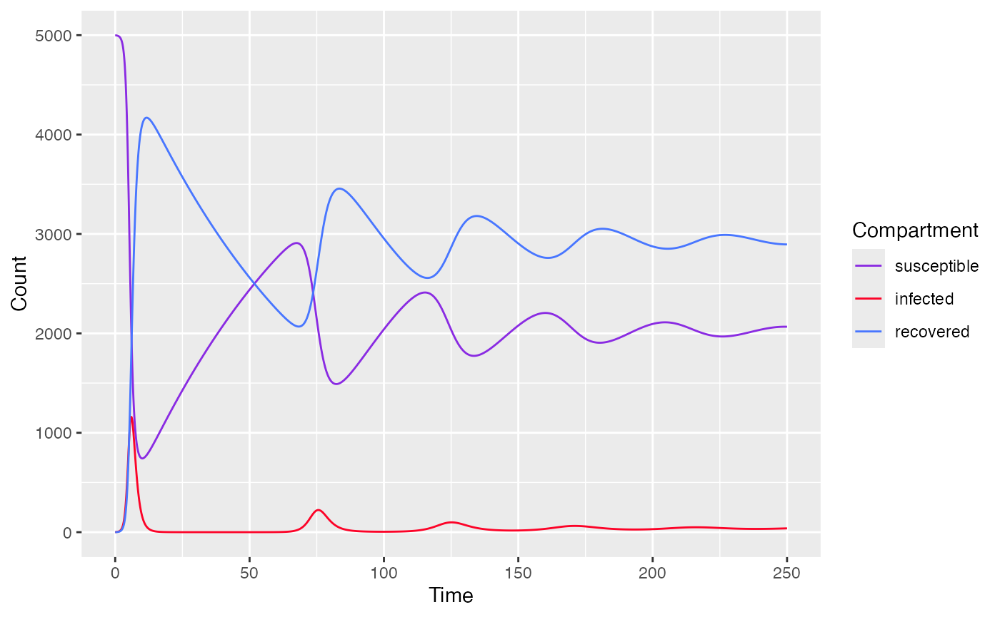
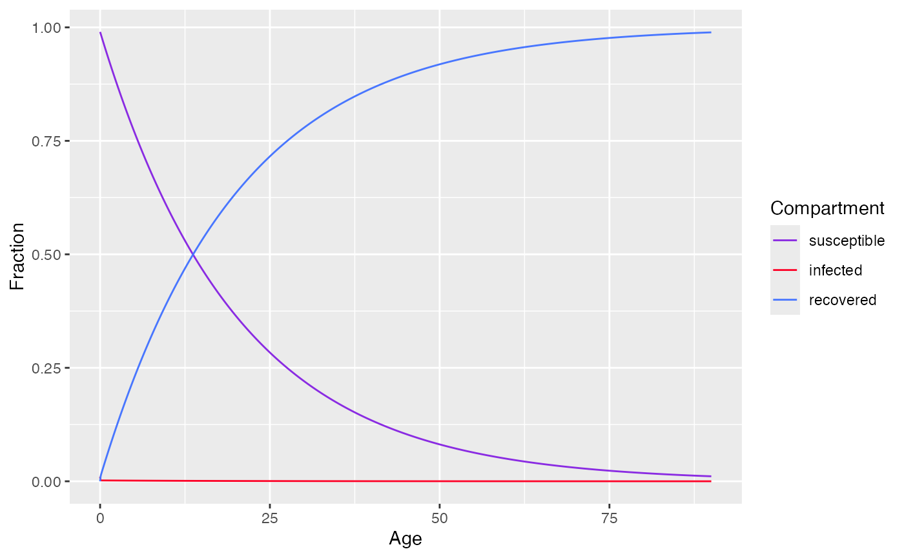

Basic SIR model
Proposed model
A transmission model consists of 3 compartments: susceptible (S), infected (I), recovered (R)
With the following assumptions:
Individuals are born into susceptible group (exposure time is age of the individual) then transfer to infected class and recovered class
Recovered individuals gained lifelong immunity
Age homogeneity
And described by a system of 3 differential equations
Where:
- with is the transmission rate
- is the natural death rate
- is the recovery rate
- is the disease related death rate
- is the proportion of newborn vaccinated and moved directly to the recovered compartment
Fitting data
To fit a basic SIR model, use sir_basic_model() and
specify the following parameters
state- initial population of each compartmenttimes- a time sequenceparameters- parameters for SIR model
state <- c(S=4999, I=1, R=0)
parameters <- c(
mu=1/75, # 1 divided by life expectancy (75 years old)
alpha=0, # no disease-related death
beta=0.0005, # transmission rate
nu=1, # 1 year for infected to recover
p=0 # no vaccination at birth
)
times <- seq(0, 250, by=0.1)
model <- sir_basic_model(times, state, parameters)
model$parameters
#> mu alpha beta nu p
#> 0.01333333 0.00000000 0.00050000 1.00000000 0.00000000
plot(model)
SIR model with constant Force of Infection at Endemic state
Proposed model
A transmission model consists of 3 compartments: susceptible (S), infected (I), recovered (R)
With the following assumptions:
Time homogeneity
Age heterogeneity
Described by a system of 3 differential equations
Where:
- are proportion of susceptible, infected, recovered population of age group respectively
- is the force of infection
- is the recovery rate
FItting data
To fit an SIR model with constant FOI, use
sir_static_model() and specify the following parameters
state- initial proportion of each compartmentages- an age sequenceparameters- parameters for the model
state <- c(s=0.99,i=0.01,r=0)
parameters <- c(
lambda = 0.05,
nu=1/(14/365) # 2 weeks to recover
)
ages<-seq(0, 90, by=0.01)
model <- sir_static_model(ages, state, parameters)
model$parameters
#> lambda nu
#> 0.05000 26.07143
plot(model)
SIR model with sub populations
Proposed model
Extends on the SIR model by having interacting sub-populations (different age groups)
With K subpopulations, the WAIFW matrix or mixing matrix is given by
The system of differential equations for the i subpopulation is given by
FItting data
To fit a SIR model with subpopulations, use
sir_subpops_model() and specify the following
parameters
state- initial proportion of each compartment for each populationbeta_matrix- the WAIFW matrixtimes- a time sequenceparameters- parameters for the model
k <- 2 # number of population
state <- c(
# proportion of each compartment for each population
s = c(0.8, 0.6),
i = c(0.2, 0.4),
r = c( 0, 0)
)
beta_matrix <- c(
c(0.05, 0.00),
c(0.00, 0.05)
)
parameters <- list(
beta = matrix(beta_matrix, nrow=k, ncol=k, byrow=TRUE),
nu = c(1/30, 1/30),
mu = 0.001,
k = k
)
times<-seq(0,10000,by=0.5)
model <- sir_subpops_model(times, state, parameters)
model$parameters
#> $beta
#> [,1] [,2]
#> [1,] 0.05 0.00
#> [2,] 0.00 0.05
#>
#> $nu
#> [1] 0.03333333 0.03333333
#>
#> $mu
#> [1] 0.001
#>
#> $k
#> [1] 2
plot(model) # returns plot for each population
#> $subpop_1
#>
#> $subpop_2
MSEIR model
Proposed model
Extends on SIR model with 2 additional compartments: maternal antibody (M) and exposed period (E)
And described by the following system of ordinary differential equation
Where
= B, the number of births in the population
is the rate of antibody decaying
is the force of infection at age
is the natural death rate at age
is the rate of becoming infected after being exposed
is the recovery rate
Fitting data
To fit a MSEIR, use mseir_model() and specify the
following parameters
a- age sequenceAnd model parameters including
gamma,lambda,sigma,nu
model <- mseir_model(
a=seq(from=1,to=20,length=500), # age range from 0 -> 20 yo
gamma=1/0.5, # 6 months in the maternal antibodies
lambda=0.2, # 5 years in the susceptible class
sigma=26.07, # 14 days in the latent class
nu=36.5 # 10 days in the infected class
)
model$parameters
#> $gamma
#> [1] 2
#>
#> $lambda
#> [1] 0.2
#>
#> $sigma
#> [1] 26.07
#>
#> $nu
#> [1] 36.5
plot(model)